🐜 Türkiye'deki Karınca Altfamilyaları
Bilimsel Teşhis Rehberi ve İnteraktif Tanı Sistemi
Bu rehber, Türkiye'de bulunan 7 karınca altfamilyasını tanımanıza yardımcı olmak için hazırlanmıştır. Morfik özellikleri öğrenin, teşhis anahtarını kullanın ve elinizdeki karıncanın hangi altfamilyaya ait olduğunu keşfedin!
📖 Rehber Hakkında
Karınca hobisi ile yeni başlayan kişilerin öğrenmek istediği becerilerin başını genelde tür ve cins tespiti tutuyor. Bunu başarmak için genişten dara doğru ilerleyerek öğrenmenizi tavsiye ederim. O yüzden bu rehberde sizlere altfamilyaları anlatacağım.
Bu sayede elinizdeki karıncaların hangi altfamilyadan olduğunu anlayabilir ve olası cinsleri de mümkün olduğunca azaltmış olursunuz. Ayrıca "Tetramorium ve Tapinoma'nın farkı ne?" gibi absürt soruların neden açıklanması zor sorular olduğunu da nispeten anlarsınız.
Formicidae familyası, 16 altfamilya ve yaklaşık 345 cins ile bizim "Karınca" dediğimiz böcekleri içeren bir taksondur. Ülkemizde bu familyaya ait 7 altfamilya bulunuyor.
Bu rehberde anlatılan altfamilyaların kimisini ömrünüzde göremeyeceksiniz bile muhtemelen. Önce temel terimleri öğrenin, sonra yaygın altfamilyalarla pratik yapın. İleri seviye altfamilyalar (Dorylinae, Proceratiinae vb.) için önce deneyim kazanmanız önerilir.
📚 Temel Terminoloji
Altfamilyaları ayırt edebilmek için öncelikle bazı temel anatomik yapıları öğrenmeniz gerekiyor. Aşağıda her bir terimin detaylı açıklaması ve referans görselleri bulunmaktadır.
Petiole & Postpetiole
Bağlantı Parçaları
Karınca bedeni temelde 3 parçadan oluşur: Kafa (Head),
Thorax (Göğüs) ve Abdomen (Karın).
Thorax ile Abdomen'i birbirine bağlayan parçaya "Petiole" denir.
Eğer birey ikinci bir bağlantı parçasına sahipse bu ikinci parçaya
"Postpetiole" denir.
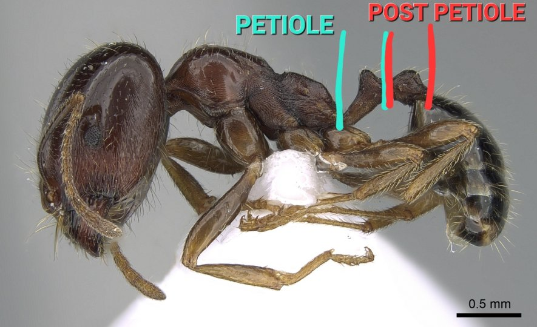
Asit Poru
Acidopore
Abdomen sonunda bulunan bir asit deliğidir. Ters huni şeklinde bir dizi kıl
tarafından korunur. Formicinae altfamilyasına özgüdür ve bu
altfamilyanın en karakteristik özelliğidir.
Asit poru sayesinde Formicinae karıncaları formik asit salgılayarak kendilerini
savunurlar.
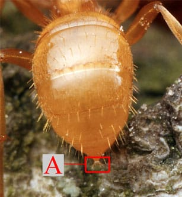
Koza
Cocoon
Kimi karınca türlerinin bakteri ve mantarlardan korunmak gibi amaçlarla evrimleştirdiği,
larvaların pupa evresine geçerken çevrelerine sardığı bir ipek kılıftır.
Önemli: Eğer bahsi geçen türün koza örmek gibi bir özelliği yoksa
veya koza örebilen türün larvası zemine tutunamamışsa pupa evresi kozasız olur.
Yani "Kozası olmayan bir birey koza örebilen bir türe ait değildir" diyemeyiz.
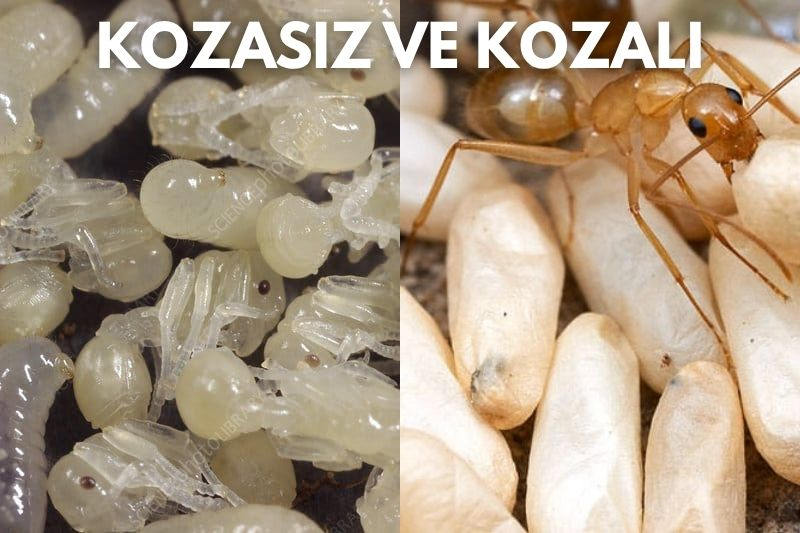
Anten Topuzu
Antennal Club
Karıncaların antenleri anten sapından sonra birçok segment halinde bölünür.
Fakat bazen her segment aynı değildir, antenin ucuna yaklaştıkça en uçtaki
birkaç segmentin kalınlıkları değişir.
Bu kalınlığı farklı olan segmentlere anten topuzları denir.
Kimi altfamilyalar bu anten topuzlarına sahipken, kimileri bundan yoksundur.
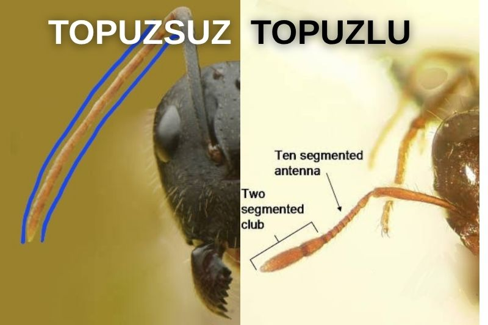
Dikenler
Spines
Bazı karıncaların thoraxlarının "propodeum" kısmında bulunan
kimi zaman ufacık kimi zaman oldukça uzun olan bir çift dikendir.
Dikene sahip olmayan bir karıncanın altfamilyasını anlamak için daha fazla veri
gereklidir fakat dikeni olan bir karınca çoğunlukla Myrmicinae
altfamilyasındandır.
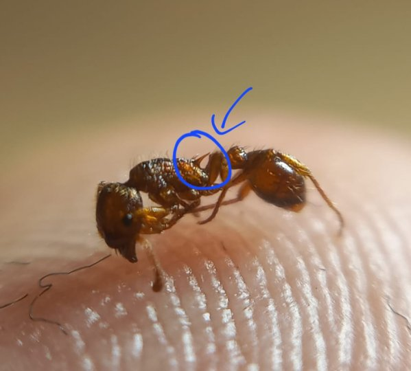
Abdomen Çentiği
Abdominal Notch
Abdomenin sonunda bulunan bir yarık veya çentiktir. Bu özellik özellikle
Dolichoderinae altfamilyasında belirgindir ve tanı sırasında
önemli bir ipucu sağlar.
Petiole gizli olan karıncalarda abdomen çentiğinin varlığı genellikle
Dolichoderinae'yi işaret eder.

Formicinae
Formicinae Latreille, 1809


🧬 Türkiye'deki Formicinae Cinsleri (13 Cins)
Dolichoderinae
Dolichoderinae Forel, 1878
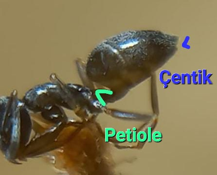
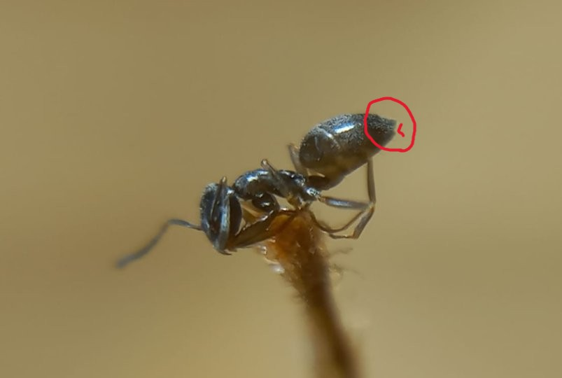
🧬 Türkiye'deki Dolichoderinae Cinsleri (5 Cins)
Myrmicinae
Myrmicinae Lepeletier, 1835
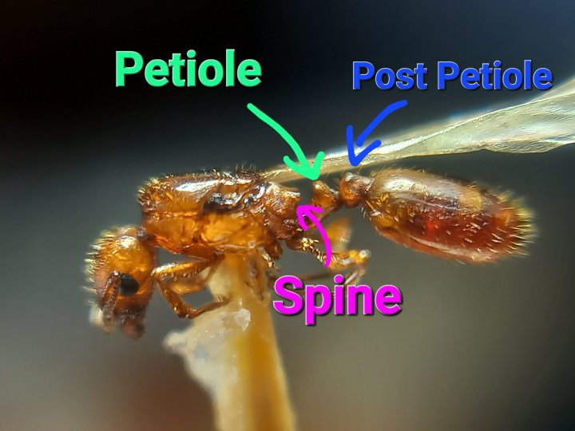
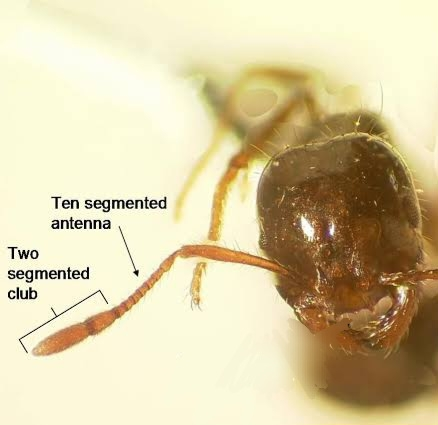
🧬 Türkiye'deki Myrmicinae Cinsleri (22 Cins)
Ponerinae
Ponerinae Lepeletier, 1835
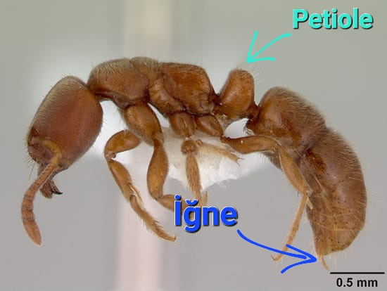
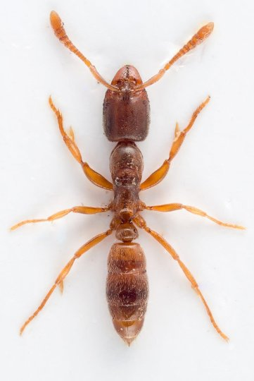
🧬 Türkiye'deki Ponerinae Cinsleri (4 Cins)
Dorylinae
Dorylinae Leach, 1815
Kendileri çok çok nadirdir, göçebe yaşadıkları için esaret altında beslenemezler, cryptic oldukları için yüzeyde görülemezler. Uçuş gibi istisna durumlarda prensine denk gelebilirsiniz veya işçileri yuva ağzında görebilirsiniz. Aklınızda tutmanız veya bilmeniz gereken bir alt familya değiller, bulan birisini görme ihtimaliniz yok denecek kadar az.
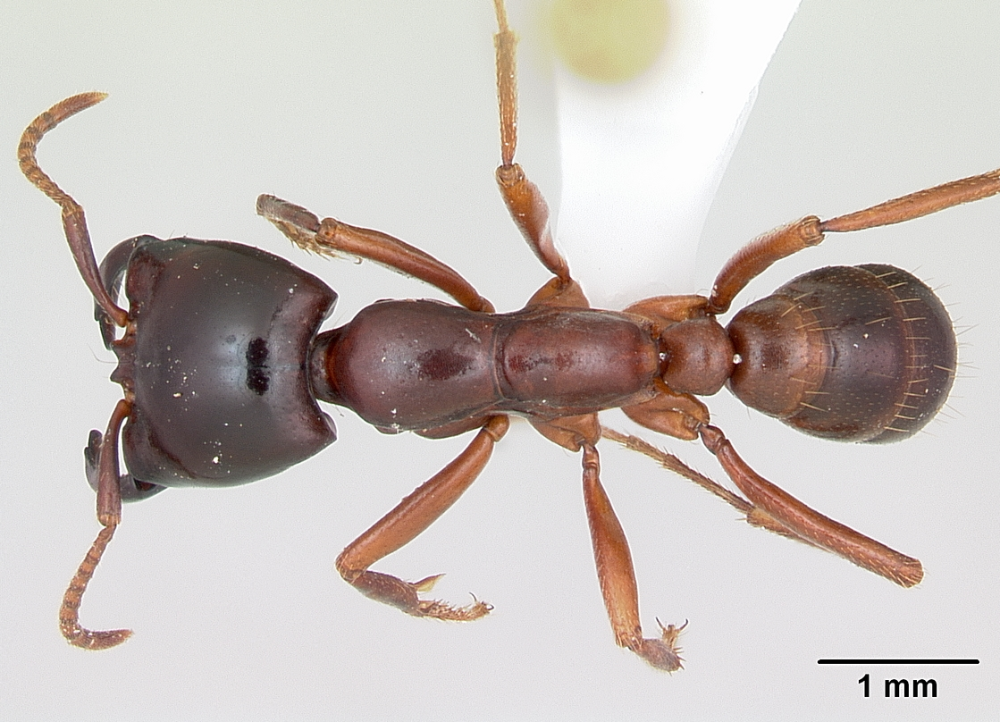
🧬 Türkiye'deki Dorylinae Cinsleri (3 Cins)
Amblyoponinae
Amblyoponinae Forel, 1893
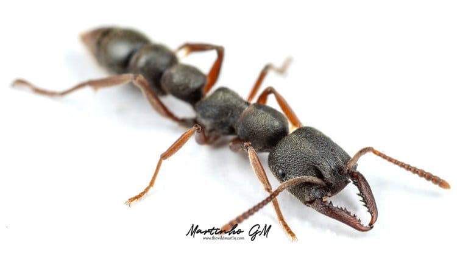
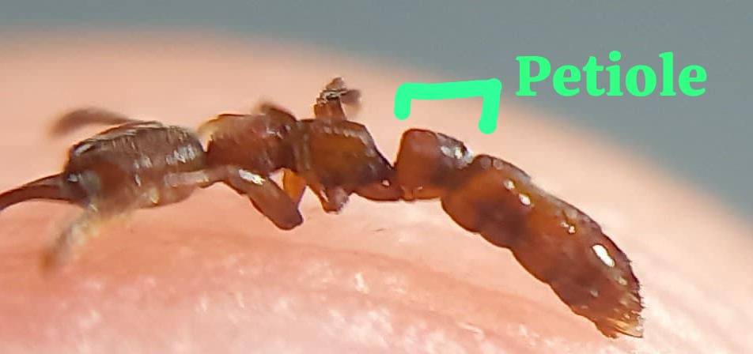
🧬 Türkiye'deki Amblyoponinae Cinsleri (1 Cins)
Proceratiinae
Proceratiinae Emery, 1895
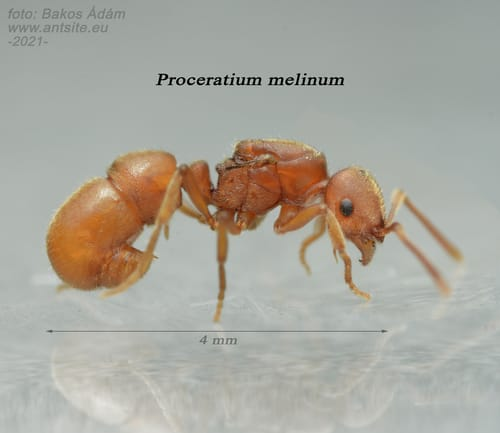
🧬 Türkiye'deki Proceratiinae Cinsleri (1 Cins)
🔬 İnteraktif Teşhis Sistemi
Adım adım soruları yanıtlayarak elinizdeki karıncanın altfamilyasını bulun
Petiole Sayısı
Karıncanın thorax (göğüs) ile abdomen (karın) arasındaki bağlantı parçalarına petiole denir. İkinci bağlantı parçası varsa buna postpetiole denir. Kaç tane bağlantı parçası var?
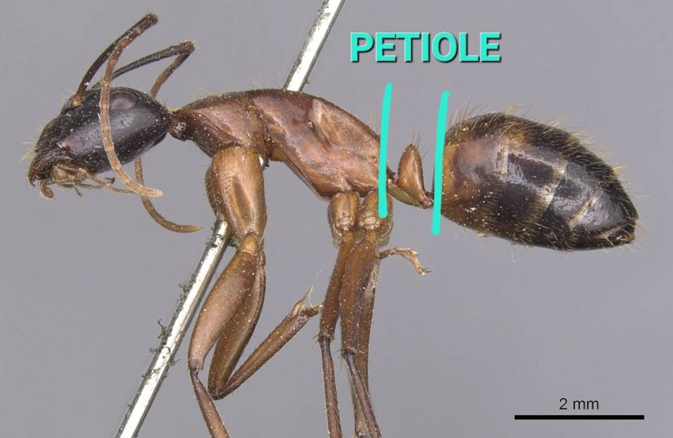

Asit Poru (Acidopore)
Karıncanın abdomen sonunda ters huni şeklinde bir dizi kıl tarafından korunan bir asit deliği var mı?
Bu yapı sadece Formicinae altfamilyasına özgüdür ve genellikle abdomenin en ucunda kolayca görülebilir. Kıl halesi ile çevrili küçük bir açıklık şeklindedir.
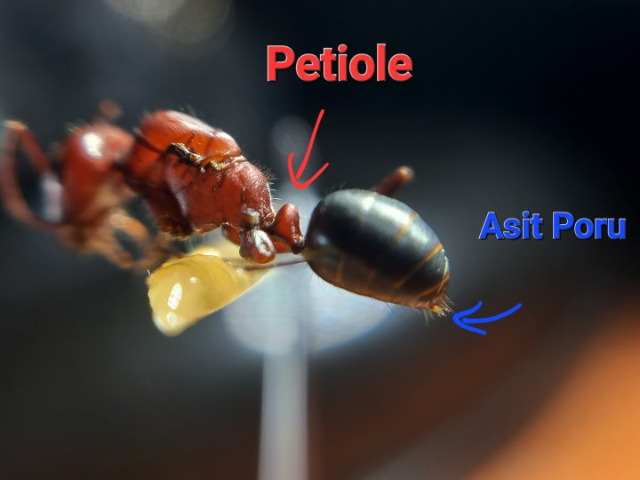
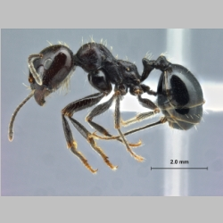
Petiole Görünürlüğü
Petiole (bağlantı parçası) belirgin ve açıkça görülebiliyor mu, yoksa abdomen tarafından gizlenmiş mi?

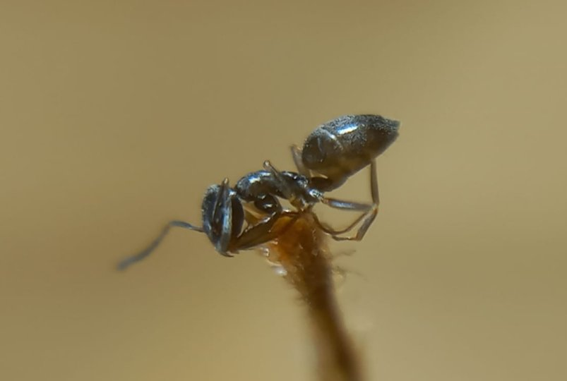
Özel Morfik Özellikler
Karıncada aşağıdaki özel özelliklerden hangisi var? (En yakın olanı seçin)